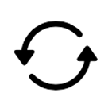
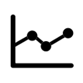
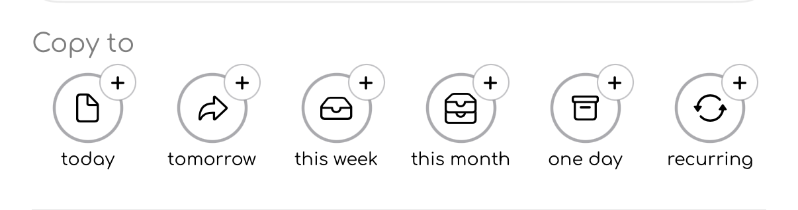
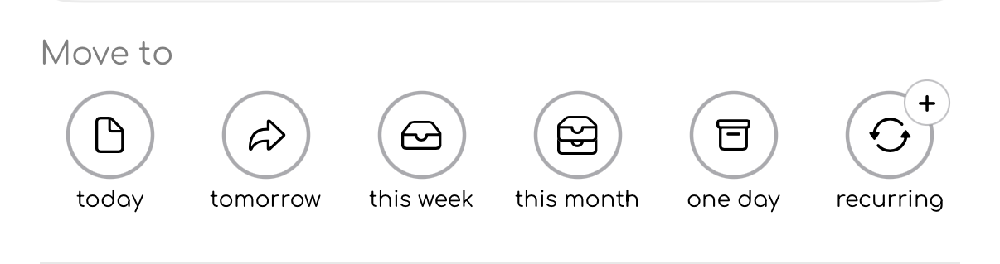

Icon glossary
This page explains the main icons used in to-day.
The icons below are shown as they appear in the app. Some icons may change colour depending on the task state, selected tab, or whether a task is archived, completed, or being edited.
Main navigation
These icons appear in the main navigation bar and settings areas.
or Daily
Your main tasks: the things you want to get done today.
or Weekly
Your first level of planning: the things you want to complete this week.
or Monthly
Your next level of planning: the things you want to do soon, but not yet.
or Someday
Your backlog: the things you will do, but not now.

The things you do often, repeated daily, weekly, or monthly.

Your completion history, streaks, and progress information.
App settings and preferences.
Task actions
These icons appear on task rows, swipe actions, task information screens, and edit controls.
Marks a task as done.
Marks a task as not done.
Hides a task without deleting it. Archived tasks can be shown again later.
Restores an archived task.
Deletes the task.
Opens the task information sheet.
Shows that the task information sheet is currently editable.
Moving tasks
These icons are used when moving a task from one view to another.
Moves the task to the to-day view.
Moves the task to tomorrow.
Moves the task to the current week.
Moves the task to the current month.
Moves the task to One Day, for things you want to do later.
Copying and moving tasks
Some task actions use the same destination icons, but the small + badge changes the meaning.

Copy to creates another version of the task in the selected destination.
The original task stays where it is.
Use Copy to when you want the same task to exist in more than one place, for example copying a task from One Day into to-day while keeping it in your backlog.

Move to sends the task to the selected destination.
The task is removed from its current view and appears in the new one.
Use Move to when the task belongs somewhere else, for example moving a task from This Month to This Week when you are ready to plan it.
Icon colour meanings
Some icons use colour to communicate state.
| Colour | Meaning |
|---|---|
| Green | Active, current, or completed |
| Blue | Planned for tomorrow |
| Red | Overdue or destructive action |
| Grey | Inactive, past, disabled, or archived |